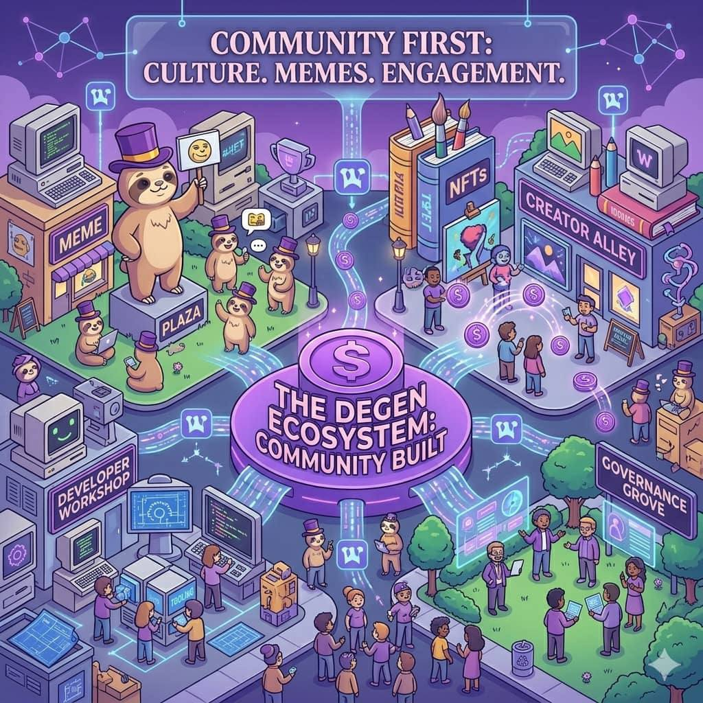

Community First
The role of culture, memes, and decentralized engagement in $DEGEN's identity.
In the world of Degen (DEGEN), the community comes first.
This means the people who use, support, and build around the token are the most important part of the project.
Unlike many crypto projects that are mainly driven by companies or investors, DEGEN grew because a group of internet users came together and built a culture around it.
DEGEN originally grew inside the decentralized social network Farcaster, especially through the app Warpcast.
Users in this community were:
- posting ideas
- sharing memes
- discussing crypto
- experimenting with rewards and tipping
Instead of a company deciding everything, the community shaped the project.
For example:
- community members promoted the token
- creators helped spread the culture
- developers built tools around it
This made the project feel organic and community owned.
Culture is a big reason why DEGEN became popular.
Crypto communities often grow because of shared identity and humor, not just technology.
In the DEGEN community, the culture includes:
- internet memes
- playful language
- inside jokes
- excitement for new experiments
This culture makes people feel like they are part of something fun and unique, not just holding a token.
Many people join the ecosystem because they enjoy the community vibe.
Memes play a huge role in DEGEN's identity.
Memes are simple images, jokes, or messages that spread quickly online.
In crypto communities, memes help:
- spread ideas quickly
- make projects go viral
- attract new users
In the DEGEN ecosystem, memes are used to:
- celebrate wins
- joke about crypto trading
- promote the community
- create shared identity
Memes turn the project into a cultural movement rather than just a financial asset.
Another important idea in DEGEN is decentralized engagement.
This means the community interacts and grows without relying on a single platform or authority.
Because DEGEN started on Farcaster, which is decentralized, users can:
- participate freely
- build new tools and apps
- reward creators directly
- create their own community initiatives
Anyone can contribute to the ecosystem.
For example:
- developers can build apps
- artists can create NFT collections
- community members can host events or campaigns
This openness allows the ecosystem to grow naturally from the bottom up.
Over time, all these elements culture, memes, and decentralized engagement created the identity of DEGEN.
The identity of DEGEN is not controlled by a single team.
Instead, it is shaped by:
- the creators who make content
- the developers who build tools
- the traders who support the token
- the community members who spread the culture
This is why many people say: "DEGEN is not just a token, it is a community."
